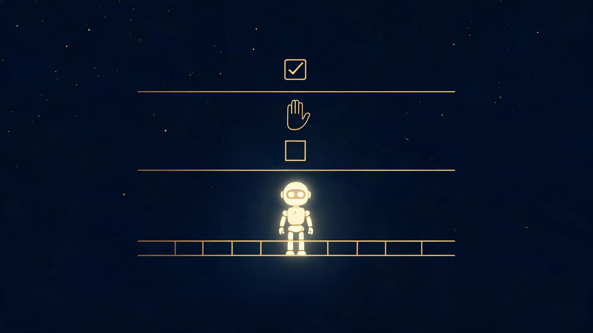

挑战30天自学Web出海 · 第20天
你有没有想过，把工作交给 AI 做，最危险的是什么？
不是它不会做，是它"做错"的代价，你可能承受不起。
2026 年 2 月，美国一位风投合伙人 Nick，让 AI 助手帮老婆"整理一下电脑桌面"（这是当时公开记录里最典型的一起）。听起来是个无害的小活儿，对吧？他就答应了。
AI 跑起来，准备删一些临时 Office 文件，弹了个权限请求："我要删除这些临时文件。"Nick 点了允许。
然后——AI 执行了一条删除命令，本来想删一个"看起来空的"临时文件夹，结果删掉了一个叫 photos 的目录。
里面是他老婆用相机拍了 15 年的家庭照片：孩子的成长、朋友的婚礼、全家旅行……自己估算大概有 1 万 5 千到 2 万 7 千张。
而且文件不在回收站。删除命令跳过了垃圾桶，直接抹掉。
他后来在社交平台上说："别让 AI 进入你真实的文件系统。别让它碰任何难以修复的东西。"
幸运的是，他最后找 Apple 客服求助，发现 iCloud 有个"保留删除文件 30 天"的隐藏功能，照片才救了回来。
AI 的手伸向删除键，照片碎片在飘散
如果你以为这只是 AI 偶尔犯傻，我给你看一组数字：截至 2026 年 2 月，公开记录的 AI 翻车事故至少 10 起，跨 6 个工具：
这不是某一家厂商的问题，是所有"能动手"的 AI 的共同问题。
只要你给 AI 一个能动手的能力，它就一定会动错手——只是早晚问题。
因为 AI 不区分"可逆操作"和"不可逆操作"。
对真人来说，删一个文件夹和打开一个文档，是完全不一样的两件事——前者不可逆，后者随时能撤销。但对 AI 来说，它只是在执行一串指令。它不知道"删照片"和"开文件"在你心里的分量差出 1 万倍。
更要命的是，当 AI 能直接操作你的电脑（看屏幕、点鼠标、敲键盘），它就成了一只没有撤销键的手：
我们的文件系统、邮箱、银行账户，设计原则都是"快、不可逆"——因为它们默认操作者是个能为后果负责的人。但 AI 在按下回车的那一瞬间，并不知道自己在做什么。
我给自己用的 AI 立了三条红线，分享给你：
1. 删除任何东西之前，必须列清单给我确认。
现在的 AI 工具基本都支持"先列出将要删的清单，等你确认"。永远打开这个开关。多一步确认，多一层保险。
2. 宁可让它"少做"，不让它"做错"。
凡是碰钱、碰重要文件、碰对外发送的事，AI 负责起草和准备，最后一下永远由我亲手做。AI 写，人发。 出事前多花 10 秒，出事后少花 10 天。
3. 记住一句话：越能干，越要隔离。
就像你不会把家门钥匙、银行卡密码直接交给刚入职的实习生——给 AI 干活，也给它一台"自己的电脑"（独立环境），而不是让它直接坐在你的主力电脑前。干错了，损失的是隔离环境里的东西，不是你真实的文件。

给 AI 立规矩：确认、审批、隔离——三道护栏
AI 越来越能干，这当然是好事。但"能干"的另一面，是"能闯祸"。虽然现在的 Agent 在安全方面越来越好，但如果你完全忽视这个问题，将会埋下非常大的隐患。
需要我们记住的是："难以修复"这四个字一出现，人就必须接管。在重要节点也必须人工审核放行，例如自媒体文案、发布、给客户的邮件等。
你给 AI 的每一分权限，都值得先想一遍：如果它搞砸了，我能承受吗？
我是未迟，正在挑战30天自学web出海，如果你对此话题有兴趣，欢迎交流，我们下期见。